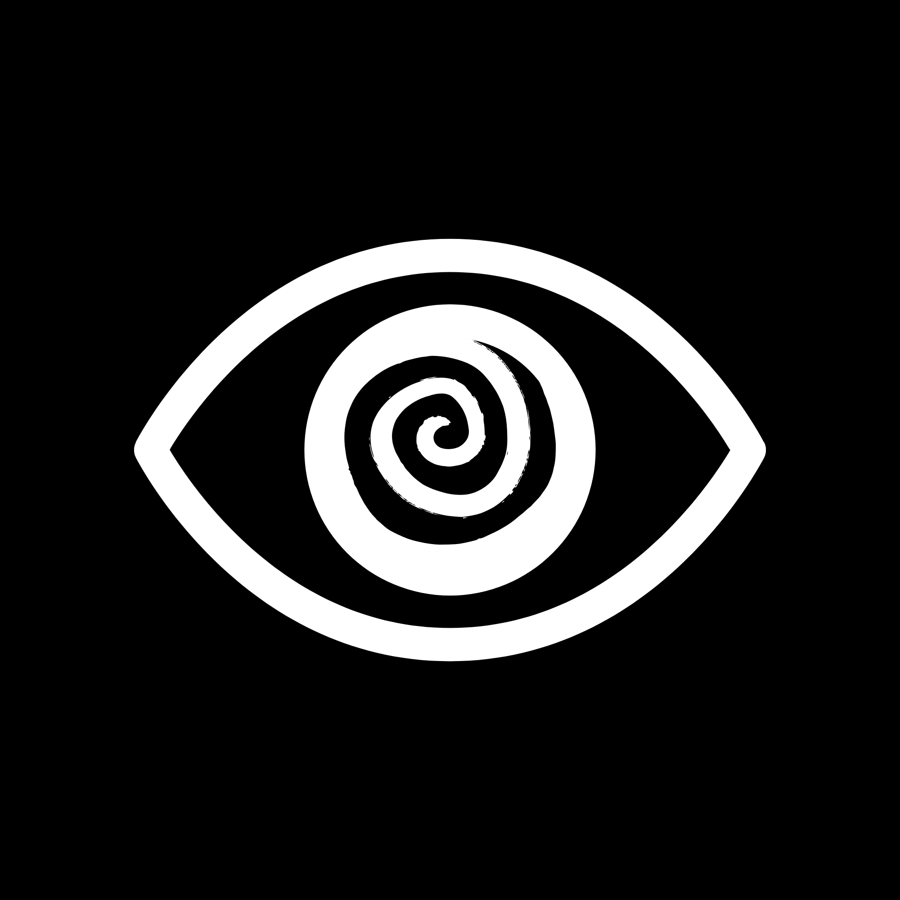

SYS.LOG // ARCHIVO_01
[C:\ELEVATOR-PIT>]
> ELEVATOR-PIT
SINOPSIS: ACTION ROGUELIKE 3D LOW-POLY. ENCARNAS A UN ROBOT DESCENDIENDO POR PISOS PROCEDIMENTALES EN LAS INSTALACIONES DE AZATH CORP. ENFRÉNTATE A ANOMALÍAS, HACKEA TERMINALES Y SOBREVIVE A LA BAJADA.
CHANNEL 03 // AV-1
SIGNAL OK